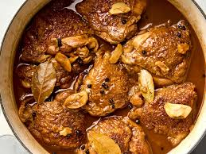

Chicken Adobo

Description
- 5 cloves garlic
- 3 pounds bone-in chicken thighs, drumsticks, or a combination
- 1/2 teaspoon kosher salt
- 1 tablespoon neutral oil, such as canola
- 3 dried bay leaves
- 2 teaspoons whole black peppercorns
- 2 cups water
- 1/2 cup soy sauce, preferably a Filipino brand like Silver Swan
- 1/3 cup cane vinegar
- 3 tablespoons oyster sauce
- Steamed white rice, for serving
Ingredients
Instructions
Return to Home Page